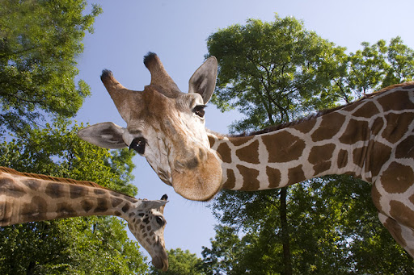
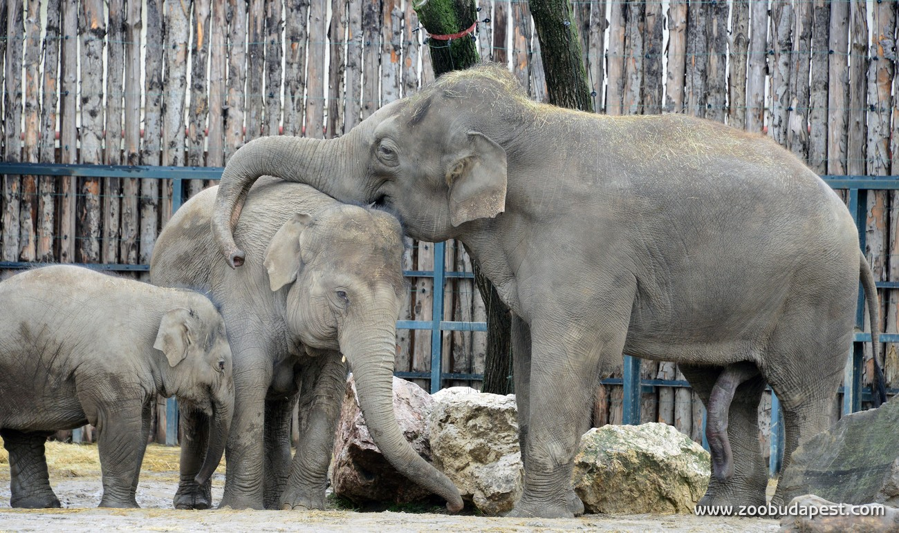
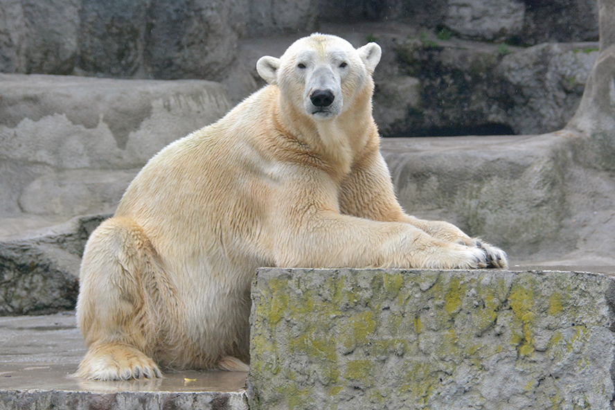
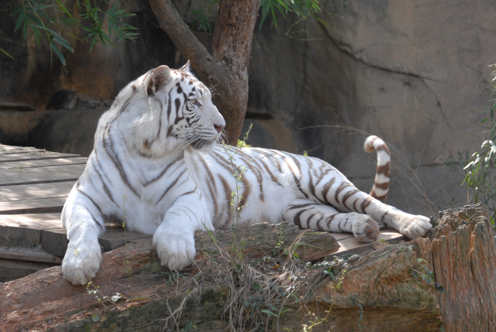

Kezdőlap
Állatok
Bejelentkezés

Zsiráf
A zsiráfok eredetileg egész Afrikában megtalálhatóak voltak, azonban manapság a Szaharától délre fekvő területeken élnek. A zsiráf a világ legmagasabb állata: marmagasságuk eléri a 3,3 métert. Nappal, a hűvösebb reggeli és esti órákban aktív, ilyenkor táplálkozik és iszik. Éjszaka többnyire állva (de olykor fekve), fejét mindig az egyik hátsó lábán nyugtatva alszik.

Elefánt
Az elefántok a ma élő legnagyobb szárazföldi állatok, egyben a legtermetesebb szárazföldi emlősök. Számos lelet tanúsítja, hogy az őskori emberek fogyasztottak különféle elefántféléket, az ókor több civilizációjában pedig a hadsereg fő csapásmérő erői voltak. Indiában mindmáig kultikus tisztelet övezi őket.

Jegesmedve
A jegesmedve elterjedési területe az Északi-sarkvidék jégmezőinek déli része. A legtöbb jegesmedve szinte sohasem teszi a lábát igazi szárazföldre. A ragadozó emlősök rendjének legnagyobb testű képviselője. A jegesmedve szinte állandóan vándorúton van, s emiatt még saját territóriumot sem tart. Táplálékának zöme állati eredetű, s mivel a sarkvidék zord körülményei közt nemigen válogathat, szinte mindent megeszik.

Fehér tigris
1951-ben, India középső részén Shri Martand Singh maharadzsa egy hím fehér kölyköt talált, amelynek anyját nem sokkal azelőtt ölték meg. A maharadzsa elvitte a kölyköt a palotájába és a „Mohan” nevet adta neki. Tőle származik a jelenleg fogságban élő összes fehér tigris, mintegy 250 darab. Magyarországon négy helyen tartják mint például: a Nyíregyházi Állatparkban.
Állatok információi
Állat
Név
Kor
Kedvenc étel
Zsiráf
Pudli
6 éves
Alma
Elefánt
Dumbo
20 éves
Tök
Jegesmedve
Vili
12 éves
Ember hús
Fehér tigris
Micimackó
18 éves
Brokkoli